CS2340 - Team 29 Project
Team Members
- Usman Rashid
- Tanmay Gupta
- Sarvesh Gade
- Evan Romero
- Ariyika Kumar
- Tri Nguyen
Introduction
WanderSync: A Collaborative Travel Management System simplifies creating and managing travel itineraries for solo and group travelers. Using a user friendly interface, the app allows users organize destinations, transportation schedules, accommodations, dining reservations, and personal notes. The key features of the app are ecure account creation, real-time collaboration tools for group planning, and seamless integration of travel details. Users can share notes, create shared agendas, and synchronize updates across all group members. The project took 4 sprints, where the group focused on builiding the core features of the app, while following differect programming best practices and patterns. Diagrams were made to better organize and visualize the system.
Design & Architecture
To better understand the system and to be able to organize it visually, we made a Domain Model, Design Class Diagram, and Use Case Digram.
Domain Model
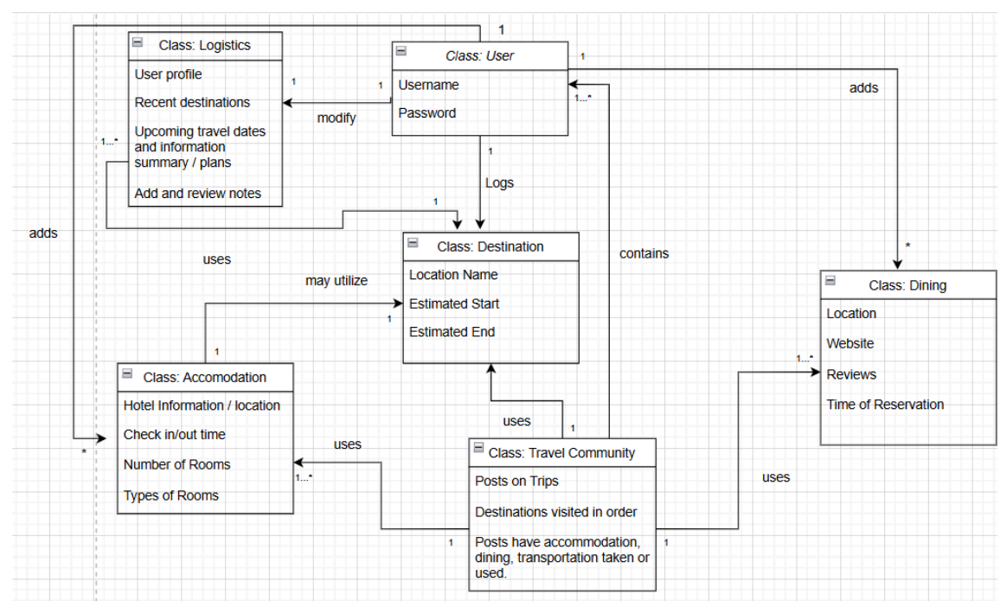The domain model shows the different attributes and classes of the system.
Design Class Diagram
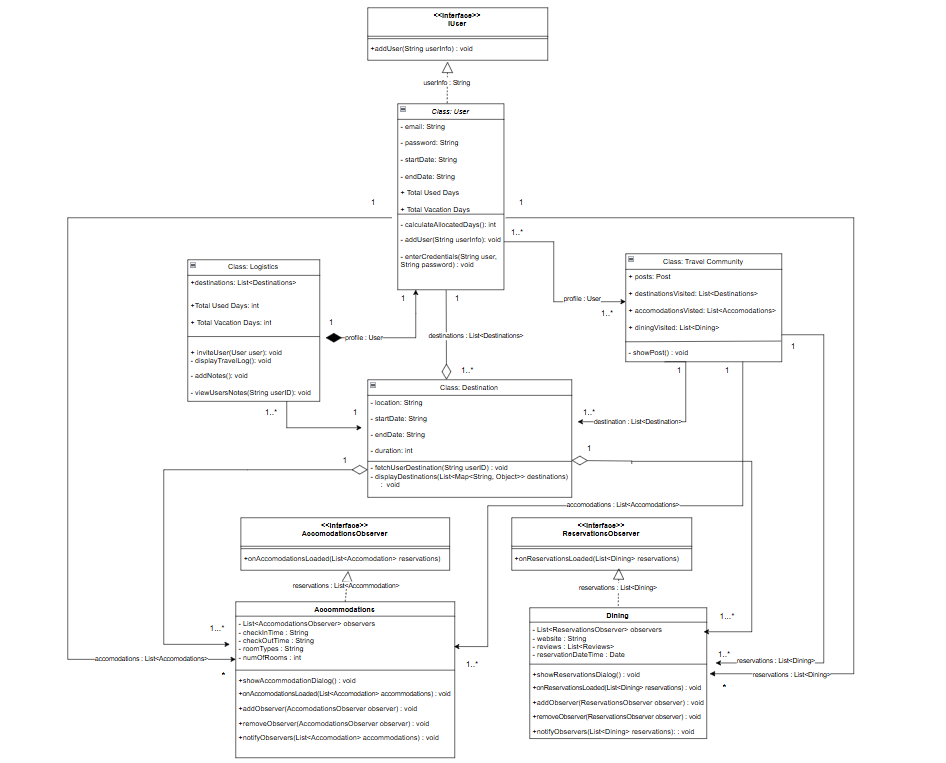Shows the different classes and their relation to other classes. This shows the methods and how their parameters interact with the attributes.
Use Case Diagram
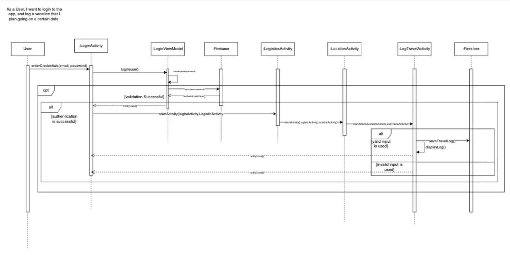Shows the functionality of logging in, adding a location, and how it is saved to Firestore.
Design Patterns
Singleton Pattern
Singleton ensures that a class can only have one instance and provides global access for that instance. We implement Singleton with FirestoreManager as the constructor is private and we have a public static method for getting an instance of FirestoreManager, ensuring that there can only be a single instance. We use FirestoreManager to manage our user and destination database and perform FirestoreManager.getInstance() when saving a user’s data to database and destination information. This method will always return the same instance of FirestoreManager allowing for consistent interactions and thread safety
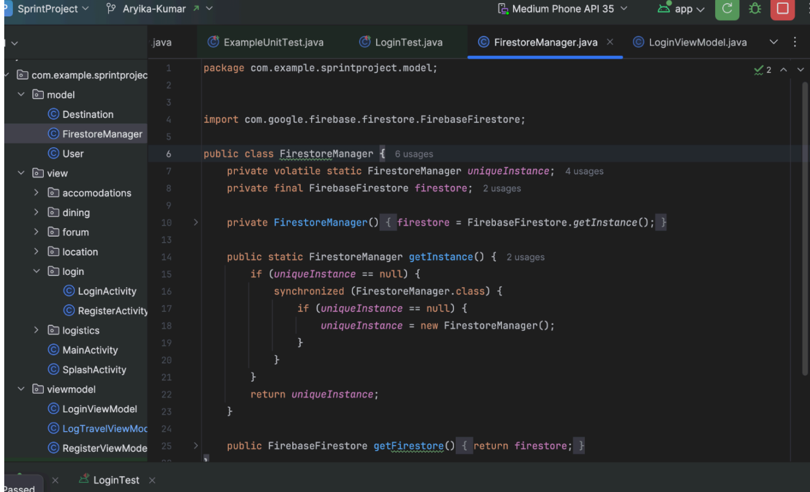MVVM Architecture
- View: Represents the UI elements that are displayed to the user. It is responsible for presenting the data to the user. This contains the buttons, text fields, and UI components.
- ViewModel: Acts as the middle layer that allows for communication between the View and Model. This contains logic for registering and adding users, allowing users to post to the forum, and for users to log their travels.
- Model: Represents the data and business logic of the application. This contains data related to travel itinerary data, user information, and our database.
Observer Pattern
In our code, the Observer Pattern was used to manage updates to the users reservations. The DiningActivity class acts as the subject, and it maintains a list of observers, such as ReservationsObserver, which listens for changes in the reservations list. DiningActivity notifies all the observers when new reservations are added or existing ones are modified, and the app will then update the UI to reflect these changes. Components can subscribe to updates by using the addObserver() method and unsubscribe by using removeObserver(). The notifyObservers() method notifies the subscribed observers with the updated reservations. A similar method was employed for the AccomodationActivity class.
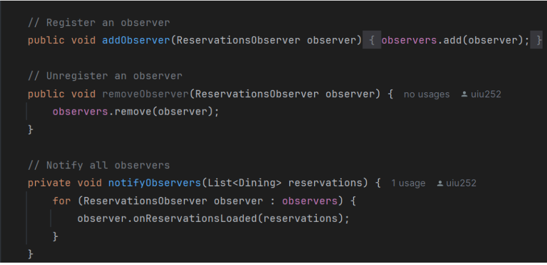User Interface
The main screens for the WanderSync app are: Logistics, Accomodations, Dining, Location, Forum and the login page.
Welcome Page
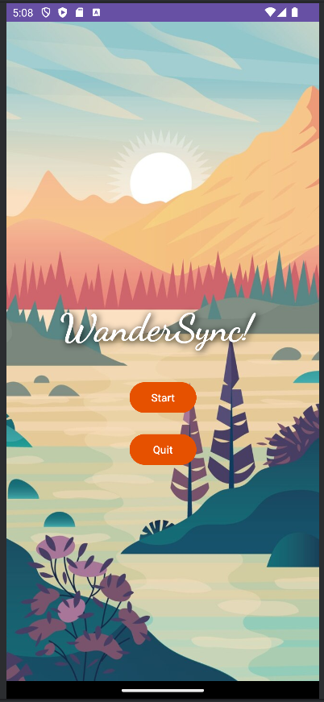Users are greeted with a beautiful welcome page upon start of app.
Login Page
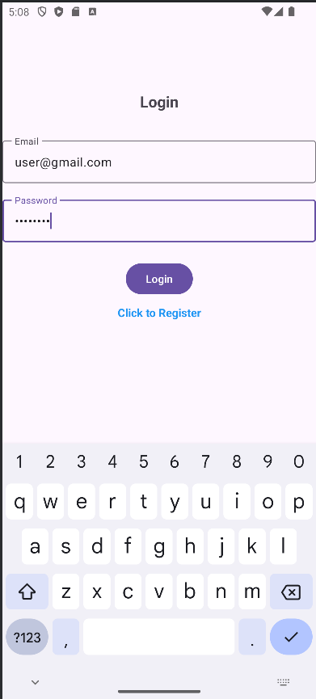Users can login or register if they do not have an account.
Logistics Page
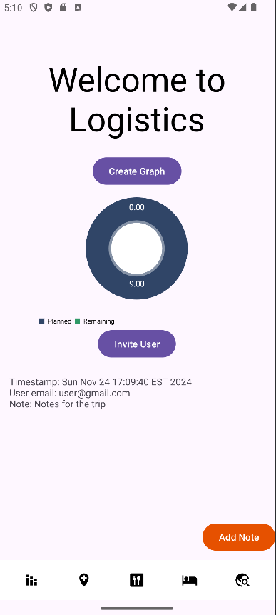The logistics page is where users can invite others and make a graph of the planned and remaining time for their trip.
Location Page
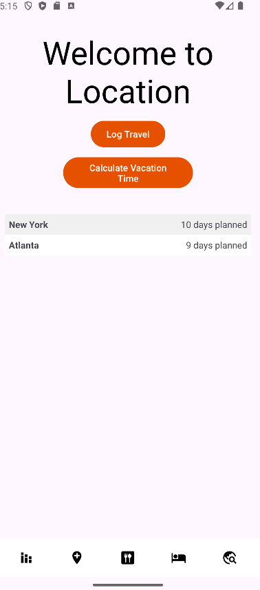Location is where users can see upcoming locations and how long their stay is.
Accommodations Page
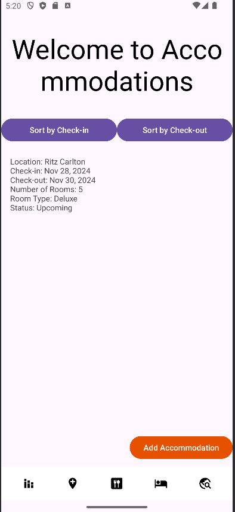Users can add accommodations and sort them by check-in or check-out.
Dining Page
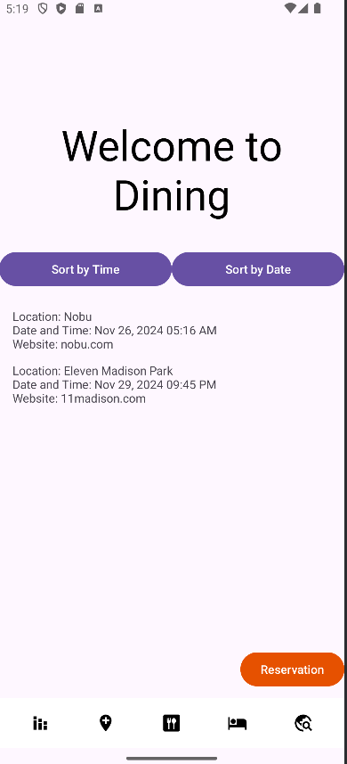Dining stores all the different restaurants along with reservations and websites for the restaurant.
Forum Page
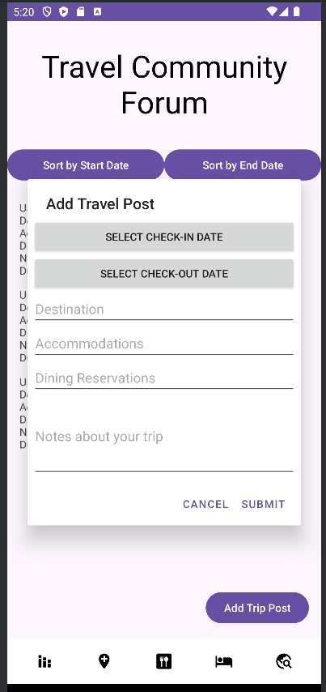Users can add posts to the forum after their trip to allow others to see their experience and collaborate on trip ideas.
Invite User Function
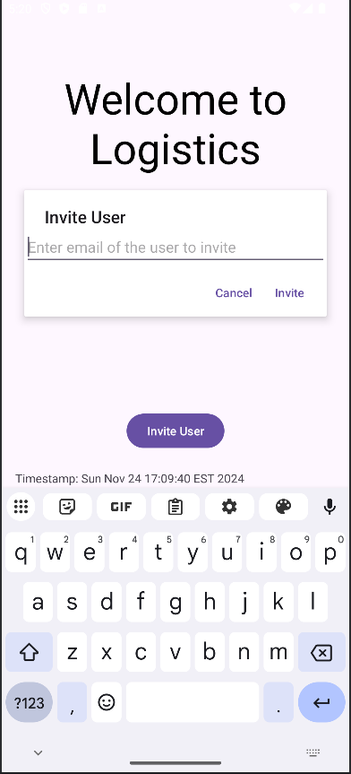Users can invite other users to build trip plans together.
Functionality
Walkthrough Video
Watch this video to understand the core features of our app!
Conclusion
The project outcomes were to work collaboratively as a group to create Wandersync and give it all of the functionalities of each screen of the app that are shown above. For example, users should be able to create and add to their trips with new upcoming destinations and the accommodations of where they are staying. They can also invite other users and collaborate through the travel forum page which allows anyone in the group to edit their trip. The biggest challenge was implementing the collaborator functionality and making it so that users that are invited to the same trip group will have the same updated information displayed. We accomplished this by creating a tripID that can be used to connect the users with all of their firestore collections. Another challenge was time management and working together as a group which was the most important knowledge we gained throughout this project. We learned how to keep everyone updated and worked together as a team. The members discuss the functionalities they have completed or need help on and communicate their plans for the next step. The rest of the team would then share their opinions and list out requirements that need to be implemented and what they can contribute. Overall, the project was a valuable experience for everyone on the team.